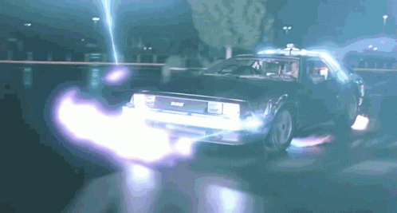

El DMC DeLorean es un automóvil deportivo fabricado por DeLorean Motor Company (DMC) entre 1981 y 1982. Es conocido como el DeLorean, ya que este fue el único modelo que fabricó dicha compañía. El auto también es llamado a veces DMC-12, que es su designación interna de preproducción. Sin embargo, el nombre DMC-12 nunca se usó en material de ventas o marketing para el modelo de producción.4 El DeLorean se caracteriza por su carrocería con puertas de ala de gaviota y paneles de acero inoxidable sin pintura. Es muy conocido por su aparición en la trilogía de películas de Back to the Future; después de aparecer en esas tres películas, el DeLorean se convirtió en un objeto de culto.56 El primer prototipo apareció en 1976 y la producción empezó oficialmente en 1981 en la fábrica que DMC tenía en Dunmurry, en Irlanda del Norte (Reino Unido). Durante su producción se cambiaron varios aspectos del automóvil, como el estilo del capó, las ruedas y el interior. Al menos 8.500 DeLorean fueron fabricados antes de que la producción finalizase en 1982. En 2007 se estimaba que aún existían 6.500 de ellos.57 El DMC DeLorean es muy conocido por su aparición como máquina del tiempo en la trilogía de Back to the Future (Regreso al futuro en España y Volver al futuro en Hispanoamérica), unas películas de ciencia ficción dirigidas por Robert Zemeckis y protagonizadas por Michael J. Fox y Christopher Lloyd. La razón principal de que fuese elegido el DeLorean fue que estaba diseñado de forma idónea para incluir la broma sobre la familia de granjeros que lo confunden con una nave espacial en la primera película. La máquina del tiempo fue diseñada por Ron Cobb, Michael Scheffe y Andrew Probert.56 Durante el rodaje de la trilogía se utilizaron seis unidades del DeLorean,56 además de un modelo de fibra de vidrio a tamaño real para simular el vuelo en el aire y otro a escala para rodar varias tomas. Los autos usados en Back to the Future tenían el motor V6 original (cuyo sonido en la película proviene del motor V8 de un Porsche 928).57 En Back to the Future Part III fueron usadas dos unidades equipadas con motores Volkswagen y chasis de buggy,57 y en una tercera unidad fueron colocados explosivos para destruirla en el final de la película, cuando un tren golpea la máquina del tiempo y la destroza.57 Solamente tres de los seis automóviles usados en las películas aún existen.58 Universal Studios posee dos de los coches restantes, los cuales usa de vez en cuando en exposiciones o para otras producciones.58 El último, usado en Back to the Future Part III, fue restaurado y salió a subasta en noviembre de 2011,5960 siendo vendido por US$ 541.200 en diciembre de ese mismo año.61 En el año 1995, el empresario inglés Stephen Wynne fundó una pequeña empresa dedicada a las reparaciones de automóviles DeLorean. En sus inicios, su lugar de trabajo era un pequeño garaje situado en Houston (Texas, Estados Unidos).5 El negocio fue creciendo y la compañía de Wynne estableció su sede en Humble, Condado de Harris (Texas). Wynne compró la marca registrada en el logotipo estilizado de DMC, junto con el inventario de piezas restantes de la DeLorean Motor Company original.6263 Tras la aprobación de la Ley de fabricación de vehículos de bajo volumen en diciembre de 2015 (que permitía que las marcas que fabricaran menos de 325 unidades no tuvieran que pasar por los trámites regulatorios que pasan las grandes empresas) DMC Texas anunció que planeaba producir réplicas de autos DeLorean. DMC anticipó la producción de aproximadamente 50 vehículos por año durante seis años con un precio minorista estimado de US $ 100000.64 No obstante, DMC Texas encontró obstáculos como la reproducción de piezas (ya que no hay más disponibles en el inventario) y encontrar un proveedor de motores.65 Debido a los retrasos de la NHTSA en ratificar la ley, finalmente se decidió cancelar el plan para construir DeLorean modernizados. Se ha discutido sobre la construcción de una versión mejorada del DeLorean original producido por DMC Texas para conmemorar el 40 aniversario, pero no se han publicado detalles.66
